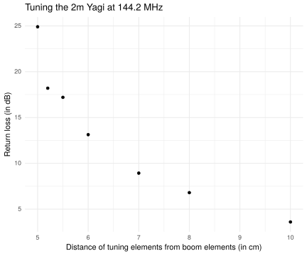

nanoVNA after tuning antenna, sorry for the reflections.
Today we have had excellent weather in Bergen, so time to get the last antenna up on the balcony. I have my almost 5 year old Ciro Mazzoni “Baby Loop” mounted on a speaker stand as of the last few days, and today I made an effort to put my recently acquired Eantenna 144LFA5, a loop-fed 5 element Yagi-Uda on the second speaker stand of the set.
The Yagi is fed by crimp terminals mounted to the coax (in my case Ultraflex 7). I’m not sure I like this, as the weatherproofing amalgamating tape hasn’t got a lot of space in between the contact area and the terminal housing. Let’s see how long it can last in the Bergen weather. The coax to my entry point is only 5 meters, so replacing it is not a major cost.
Mounting the Yagi to the speaker stand wasn’t as diffiult as I had worried it would be. The speaker stand has a diameter of 38mm, while the mounting bracket must have been made for a tube at least 50mm. But when I tighten down the bolts, there isn’t a lot of play, so I hope it will stay put.
The Eantenna Yagi is fed with a full-wave loop. Two elements are mounted to the boom (the back one with a plastic space for insulation) about XX cm apart . Between the ends of the elements are aluminium connecting U-elements mounted with hose clamps, and the antenna is tuned by adjusting how far in the U-elements are pushed before they are tightened down. I used my nanoVNA as an antenna analyzer centered at 145 MHz with a 10 MHz span. I measured from the outside of the U-element to the edge of the mounted elements and noted the return loss in dB at 144.2 MHz.

I couldn’t replicate that measurement of a fantastic return loss of 25 dB at 5cm, but as the return loss is approaching 20dB, measurements are very sensitive to the local environment. In the end, I went with just a tad more than 5 cm, corresponding to about 17.4 dB return loss (or a vswr of about 1.3:1) or better across all of the 2m band.
nanoVNA after tuning antenna, sorry for the reflections.
This is what the antenna look like pointing approximately south from Landås:

2m antenna pointing south.
And this is what the baby loop looks like, mounted on the same type of (temporary) speaker stand:

Baby loop on the balcony.